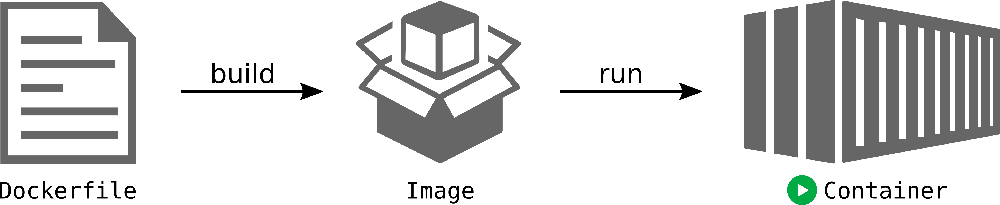

8 Creating a Dockerfile
Duration: 40 min
- You know what a Dockerfile is and understand how it used to build an image.
- You will be able to create a Dockerfile to containerize an application.
- You can build an image from a Dockerfile and publish it to a registry.
- You know how to correclty name and tag an image.
8.1 Introduction
Research projects typically require a lot of specific software that is not available in predefined Docker image. In this session, we will create a first own Dockerfile to build a custom image.
Do you remember the Docker workflow?

In order to build an image, we need to create a Dockerfile.
8.2 What is a Dockerfile?
A Dockerfile is a text document that contains all the commands a user could call on the command line to assemble an image.
The Dockerfile a set of simple commands that describe how to build a Docker image.
Let’s have a look at this example for our own “Hello World” application:
# use the minimal linux alpine image
FROM alpine:3.12
ENTRYPOINT ["echo", "Hello World"]This Dockerfile uses only two commands:
FROMspecifies the base image to use.ENTRYPOINTspecifies the command to run when the container starts.
To build an image from this Dockerfile, save it into a new directory and run the following command:
docker build -t my-hello-world:0.1 .The -t flag is used to tag the image with a name. The . at the end of the command specifies the build context, which is the directory where the Dockerfile is located.
After the build is complete, you can run the image with the following command:
docker run my-hello-worldDoes the output says “Hello World”?
Note how the command echo "Hello World" is specified as an list or array. This is the so called exec form of the ENTRYPOINT command. It is recommended because it explicitly states the command and its arguments.
There is also a shell form of the ENTRYPOINT command, which is specified as a string. Docker translates this internally to the exec form by running the command as shell command.
8.3 Building a container for Python analysis
Next, we will create a Dockerfile that plots some data using Python. For this we require some more libraries, the Python script and the data to be plotted.
This image also builds upon the alpine image and then installs Python3 and the required libraries.
For the ENTRYPOINT, we will start the container with the Python script plot.py that reads the data from a CSV file.
# Dockerfile
FROM alpine:3.12
RUN apk add --update python3 py3-pip py3-matplotlib py3-numpy py3-pandas
ENTRYPOINT ["python3", "plot.py"]The RUN command is used to execute a command when building the image. It is typically used to install software packages.
In this example, we use the package manager apk that is part of alpine linux, to install Python3, pip, and the required Python libraries.
What happens when you build this image and run the container?
Probably you will get an error message that the file plot.py is not found.
python3: can't open file '//plot.py': [Errno 2] No such file or directoryWhy is that? Isn’t the file in the same directory as the Dockerfile?
The problem is that the a Docker container does not have access to the host file system. Neither, did we include the file in the image.
Let’s do that now:
# Dockerfile
FROM alpine:3.12
RUN apk add --update python3 py3-pip py3-matplotlib py3-numpy py3-pandas
WORKDIR /app
COPY annual-temp-anomalies.csv plot.py /app
ENTRYPOINT ["python3", "plot.py"]Let’s look at the two new commands:
WORKDIRsets the working directory for all subsequent commands. This is similar to thecdcommand in a shell.COPYcopies files from the host to the image. The first argument is the source file on the host, the second argument is the destination in the image.
Now, build the image and run the container.
8.4 ENTRYPOINT vs CMD
Both, ENTRYPOINT and CMD specify what commands are executed when the container starts.
However, ENTRYPOINT is always executed. The command defined here is not optional.
In contrast, CMD is optional. If a command is specified when running the container, it will override the CMD command.
So for example, if a Dockerfile ends with the following line:
CMD ["python3", "plot.py"]You can run the container with a different command like this:
docker run my-python-plot:0.1 python3 plot.py --helpYou can also combine ENTRYPOINT and CMD:
ENTRYPOINT ["python3"]
CMD ["plot.py"]8.5 Binding host directories to a container
The COPY command is useful to include files in the image, but it is not practical for large files or files that change frequently.
To access files on the host system from a container, we can use bind mounts. This is a way to mount a host directory into a container.
To bind mount the current directory into the container, we can use the -v flag when running the container:
docker run -v $(pwd):/app python-plot:0.1 This command mounts the current directory into the /app directory in the container. The $(pwd) command is used to get the current directory.
Run the container, not including the files in the image, but using a bind mount.
8.6 Understand layers
When building an image, Docker uses a layered file system. Each command in the Dockerfile creates a new layer in the image.
When you build an image, Docker caches the layers. If you change a command in the Dockerfile, Docker will only rebuild the layers that are affected by the change.
Consider this example:
# Dockerfile
FROM alpine:3.12
RUN apk add --update python3 py3-pip py3-matplotlib py3-numpy py3-pandas
WORKDIR /app
COPY annual-temp-anomalies.csv plot.py /app
ENTRYPOINT ["python3", "plot.py"]When you build this image, Docker will create the following layers:
- The base image
alpine:3.12 - The installed packages
- The working directory
- The copied files
If you change the COPY command, Docker will only rebuild the last two layers.